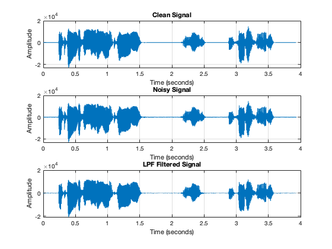

Contents
- Question 1: Record Audio
- Question 2: Load Audio
- Question 3: Add Noise
- Plotting Audios
- Question 4: dtft Plots
- Question 5: Design an appropriate elliptic LPF with the ellip function
- Clean Signal
- Noisy Signal
- Filtered Signal
- Question 6: Comment on your observations. Can you remove most of the noise from the corrupted
- Question 7: Moving Average Filter
- Plotting the frequency response of both filters
- Clean Signal
- Noisy Signal
- LPF Filtered Signal
- MA Filtered Signal
- Extra: Applying both filters together
- Question 8: Why did we specifically use LPFs for denoising and not other kinds of filters?
clc; close all; clear; % Setting up required functions u = @(n)double(n>=0); del = @(n)double(n==0);
Question 1: Record Audio
% Done
Question 2: Load Audio
% Sampling Frequency Fs = 44100; T = 1/Fs; % Audio Data x = load('audio.txt'); x = x(:,1); x = transpose(x); % Testing Audio soundsc(x,Fs);
Question 3: Add Noise
sigma = 100;
noise = sigma*randn(1,length(x));
x_noisy = x + noise;
% Testing Noisy
soundsc(x_noisy,Fs);
Plotting Audios
t = 0:T:(length(x)-1)*(T); figure; subplot(2,1,1); plot(t,x); xlabel("t(seconds)"); ylabel("x(t)"); title("Clean Audio (unzoomed)"); grid on; subplot(2,1,2); plot(t,x_noisy); xlabel("t(seconds)"); ylabel("x(t)"); title("Noisy Audio (unzoomed)"); grid on; figure; t = 0:T:(length(x)-1)*(T); subplot(2,1,1); plot(t,x); xlabel("t(seconds)"); ylabel("x(t)"); title("Clean Audio (zoomed)"); xlim([1.0,2.0]); grid on; subplot(2,1,2); plot(t,x_noisy); xlabel("t(seconds)"); ylabel("x(t)"); title("Noisy Audio (zoomed)"); xlim([1.0,2.0]); grid on;
Question 4: dtft Plots
% Compute FFT of the clean signal clean_fft = abs(fft(x)); clean_fft = clean_fft(1:length(clean_fft)/2); % Taking only the positive half % Compute FFT of the noisy signal noisy_fft = abs(fft(x_noisy)); noisy_fft = noisy_fft(1:length(noisy_fft)/2); % Taking only the positive half % Define frequency axis for plotting N = length(x); frequencies = (0:N/2 - 1) * Fs / N; % Plotting FFT magnitudes figure; subplot(2,1,1); plot(frequencies, clean_fft); xlabel('Frequency (Hz)'); ylabel('Magnitude'); grid on; title('FFT Magnitude of Clean Signal'); subplot(2,1,2); plot(frequencies, noisy_fft); xlabel('Frequency (Hz)'); ylabel('Magnitude'); grid on; title('FFT Magnitude of Noisy Signal'); % Plotting FFT magnitudes zoomed figure; subplot(2,1,1); plot(frequencies, clean_fft); xlabel('Frequency (Hz)'); ylabel('Magnitude'); xlim([0,1500]); grid on; title('FFT Magnitude of Clean Signal (zoomed)'); subplot(2,1,2); plot(frequencies, noisy_fft); xlabel('Frequency (Hz)'); ylabel('Magnitude'); xlim([0,1500]); grid on; title('FFT Magnitude of Noisy Signal (zoomed)'); % Over what range do you see the dominant frequencies in the clean signal? % 0Hz to 700Hz
Question 5: Design an appropriate elliptic LPF with the ellip function
pass_band_ripple = 0.3; stop_band_ripple = 0.5; cut_off_frequency = 300; [n, Wn] = ellipord(cut_off_frequency*2/Fs, (cut_off_frequency+500)*2/Fs, pass_band_ripple, stop_band_ripple); [b_ellip, a_ellip] = ellip(n, pass_band_ripple, stop_band_ripple, Wn); filtered_signal = filter(b_ellip, a_ellip, x_noisy); cleaned_frequencies = (0:N/2 - 1) * Fs / N; soundsc(filtered_signal, Fs); figure; subplot(3,1,1); plot(t, x); xlabel('Time (seconds)'); ylabel('Amplitude'); title('Clean Signal'); grid on; subplot(3,1,2); plot(t, x_noisy); xlabel('Time (seconds)'); ylabel('Amplitude'); title('Noisy Signal'); grid on; subplot(3,1,3); plot(t, filtered_signal); xlabel('Time (seconds)'); ylabel('Amplitude'); title('LPF Filtered Signal'); grid on; figure; subplot(3,1,1); plot(t, x); xlim([1.0,2.0]); xlabel('Time (seconds)'); ylabel('Amplitude'); title('Clean Signal (zoomed)'); grid on; subplot(3,1,2); plot(t, x_noisy); xlim([1.0,2.0]); xlabel('Time (seconds)'); ylabel('Amplitude'); title('Noisy Signal (zoomed)'); grid on; subplot(3,1,3); plot(t, filtered_signal); xlim([1.0,2.0]); xlabel('Time (seconds)'); ylabel('Amplitude'); title('LPF Filtered Signal (zoomed)'); grid on; filtered_fft = abs(fft(filtered_signal)); frequencies = (0:N/2 - 1) * Fs / N; figure; subplot(3,1,1); plot(frequencies, clean_fft(1:N/2)); xlabel('Frequency (Hz)'); ylabel('Magnitude'); title('Clean Signal Spectrum'); xlim([0,1500]); grid on; subplot(3,1,2); plot(frequencies, noisy_fft(1:N/2)); xlabel('Frequency (Hz)'); ylabel('Magnitude'); title('Noisy Signal Spectrum'); xlim([0,1500]); grid on; subplot(3,1,3); plot(frequencies, filtered_fft(1:N/2)); xlabel('Frequency (Hz)'); ylabel('Magnitude'); title('LPF Filtered Signal Spectrum'); xlim([0,1500]); grid on; figure; subplot(3,1,1); plot(frequencies, clean_fft(1:N/2)); xlabel('Frequency (Hz)'); ylabel('Magnitude'); title('Clean Signal Spectrum (zoomed)'); xlim([0,600]); grid on; subplot(3,1,2); plot(frequencies, noisy_fft(1:N/2)); xlabel('Frequency (Hz)'); ylabel('Magnitude'); title('Noisy Signal Spectrum (zoomed)'); xlim([0,600]); grid on; subplot(3,1,3); plot(frequencies, filtered_fft(1:N/2)); xlabel('Frequency (Hz)'); ylabel('Magnitude'); title('LPF Filtered Signal Spectrum (zoomed)'); xlim([0,600]); grid on;
Clean Signal
soundsc(x, Fs);
Noisy Signal
soundsc(x_noisy, Fs);
Filtered Signal
soundsc(filtered_signal, Fs);
Question 6: Comment on your observations. Can you remove most of the noise from the corrupted
signal? Is the noise reduction quality affected more by the size of passband ripple or by the size of the stopband ripple? What is one more important — that the passband be very close to 1 or that the stopband be very close to 0? You should try different filter designs and listen to the results to find out.
% Larger passband ripples seemed to allow more noise to leak into the passband resulting in a poor signal quality. % On the other hand, larger stopband ripples seem to not attenuate noise % frequencies as seen through experiemnting and checking the graphs
Question 7: Moving Average Filter
r = 10; h_ma = ones(1, r) / r; filtered_signal_ma = filter(h_ma, 1, x_noisy); filtered_fft_ma = abs(fft(filtered_signal_ma)); figure; subplot(4,1,1); plot(t, x); xlabel('time (s)'); ylabel('Amplitude'); title('Clean Signal'); grid on; subplot(4,1,2); plot(t, x_noisy); title('Noisy Signal'); grid on; xlabel('time (s)'); ylabel('Amplitude'); subplot(4,1,3); plot(t, filtered_signal); title('LPF Filtered Signal Spectrum'); grid on; xlabel('time (s)'); ylabel('Amplitude'); subplot(4,1,4); plot(t, filtered_signal_ma); title('Moving Average Filtered Signal'); grid on; xlabel('time (s)'); ylabel('Amplitude'); figure; subplot(4,1,1); plot(t, x); title('Clean Signal (zoomed)'); xlabel('time (s)'); ylabel('Amplitude'); grid on; xlim([1.0,2.0]); subplot(4,1,2); plot(t, x_noisy); title('Noisy Signal (zoomed)'); grid on; xlabel('time (s)'); ylabel('Amplitude'); xlim([1.0,2.0]); subplot(4,1,3); plot(t, filtered_signal); title('LPF Filtered Signal Spectrum (zoomed)'); grid on; xlabel('time (s)'); ylabel('Amplitude'); xlim([1.0,2.0]); subplot(4,1,4); plot(t, filtered_signal_ma); title('Moving Average Filtered Signal (zoomed)'); grid on; xlabel('time (s)'); ylabel('Amplitude'); xlim([1.0,2.0]); figure; subplot(4,1,1); plot(frequencies, clean_fft); xlabel('Frequency (Hz)'); ylabel('Magnitude'); title('Clean Signal Spectrum'); xlim([0,700]) grid on; subplot(4,1,2); plot(frequencies, noisy_fft); xlabel('Frequency (Hz)'); ylabel('Magnitude'); title('Noisy Signal Spectrum'); xlim([0,700]) grid on; subplot(4,1,3); plot(frequencies, filtered_fft(1:N/2)); xlabel('Frequency (Hz)'); ylabel('Magnitude'); title('LPF Filtered Signal Spectrum'); xlim([0,700]) grid on; subplot(4,1,4); plot(frequencies, filtered_fft_ma(1:N/2)); xlabel('Frequency (Hz)'); ylabel('Magnitude'); title('Moving Average Filtered Signal Spectrum'); xlim([0,700]) grid on; figure; subplot(4,1,1); plot(frequencies, clean_fft); xlabel('Frequency (Hz)'); ylabel('Magnitude'); title('Clean Signal Spectrum (zoomed)'); xlim([0,700]) grid on; subplot(4,1,2); plot(frequencies, noisy_fft); xlabel('Frequency (Hz)'); ylabel('Magnitude'); title('Noisy Signal Spectrum (zoomed)'); xlim([0,700]) grid on; subplot(4,1,3); plot(frequencies, filtered_fft(1:N/2)); xlabel('Frequency (Hz)'); ylabel('Magnitude'); title('LPF Filtered Signal Spectrum (zoomed)'); xlim([0,700]) grid on; subplot(4,1,4); plot(frequencies, filtered_fft_ma(1:N/2)); xlabel('Frequency (Hz)'); ylabel('Magnitude'); title('Moving Average Filtered Signal Spectrum (zoomed)'); xlim([0,700]) grid on; soundsc(filtered_signal_ma, Fs);
Plotting the frequency response of both filters
[H_ellip, w_ellip] = freqz(b_ellip, a_ellip, 1024, Fs); [H_ma, w_ma] = freqz(h_ma, 1, 1024, Fs); figure; subplot(2,1,1); plot(w_ellip, abs(H_ellip)); xlabel('Frequency (Hz)'); ylabel('Magnitude'); title('Elliptic Filter Frequency Response'); grid on; subplot(2,1,2); plot(w_ma, abs(H_ma)); xlabel('Frequency (Hz)'); ylabel('Magnitude'); title('Moving Average Filter Frequency Response'); grid on;
Clean Signal
soundsc(x, Fs);
Noisy Signal
soundsc(x_noisy, Fs);
LPF Filtered Signal
soundsc(filtered_signal, Fs);
MA Filtered Signal
soundsc(filtered_signal_ma, Fs);
Extra: Applying both filters together
filtered_signal_both = filter(h_ma, 1, filtered_signal); soundsc(filtered_signal_both, Fs);
Question 8: Why did we specifically use LPFs for denoising and not other kinds of filters?
Noise often occupy higher frequencies compared to the signal of interest, and low pass filters (LPFs) are designed to attenuate and eliminate high-frequency noise components while letting lower-frequency signal components pass through, resulting in a noise reduction without significantly affecting the essential components of the signal.